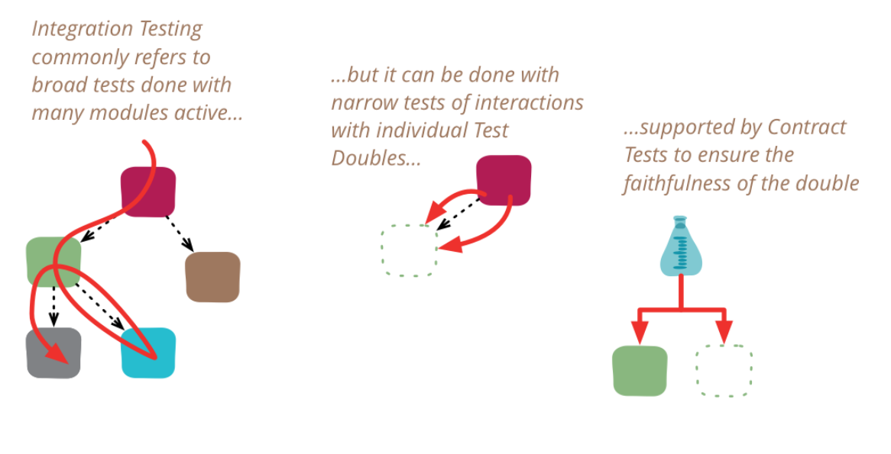

Integration testing (Integration Testing)
Integration testing (Integration Testing) is a level of software verification focused on verifying interactions, communication, and data and control flows between integrated software units, modules, or external subsystems. While unit tests (Unit Testing) verify the functionality of isolated components, integration testing detects errors arising at their boundaries – for example, incorrect interpretation of interface parameters, data type incompatibility, timing errors, and violations of architectural contracts.
From the perspective of software architecture and process models (e.g., AUTOMOTIVE SPICE – SWE.5 Software Integration and Integration Test), the objective of integration testing is to demonstrate that integrated software items conform to the higher-level architectural design (Architectural Design). In industrial and safety-critical software, integration testing verifies not only the functional connection of components, but also hardware-software interfaces (HSI), the stability of the dynamic architecture, and the allocation of critical system resources (stack/stack size, CPU utilization, RAM/ROM limits).
#Definitions and basic concepts
#1. Software integration testing (Software-Software Integration Testing / ASPICE SWE.5)
- Definition: The process of testing combinations of interconnected software components to verify their mutual relationships, the correctness of their implementation within the software architecture, and compliance with architectural design requirements.
- Significance in architecture: Verifies both static and dynamic aspects of the architecture – correct call sequencing, mode management (mode management), data and control flows, and behavior in degraded states.
- Significance in testing: Reduces the risk of undetected failures in data flows and workflows during system execution and verifies the robustness of the architecture.
- Typical mistake / misconception: Treating integration testing as merely “running the entire system all at once” (confusing it with system testing) or relying on passing unit tests to guarantee error-free cooperation between components.
- Example from embedded/industrial systems: Testing the cooperation of a module processing the signal from a rotational speed sensor with a drive control module through an intermediate data abstraction layer (Data Abstraction Layer).
#2. Integration strategies (Top-Down, Bottom-Up, Sandwich/Mixed, Big-Bang)
- Definition: Designing the procedure that determines the order in which individual software modules are assembled and progressively tested.
- Top-Down: Integration starts with the highest-level architectural modules (e.g., the
mainloop, interrupt entry points) and proceeds toward the lowest-level ones. Requires the creation of Stubs (stubs). - Bottom-Up: Starts with the lowest-level modules (e.g., BSW/HAL hardware drivers) and proceeds toward the application logic. Requires the creation of Drivers (control modules).
- Sandwich / Mixed: A combination of both approaches; integrates the most critical components regardless of their layer, thereby eliminating the need for redundant substitutes and addressing high architectural risks.
- Big-Bang: A non-incremental approach in which all modules are connected at once without prior incremental testing.
- Top-Down: Integration starts with the highest-level architectural modules (e.g., the
- Significance in architecture: The strategy directly reflects dependencies in the architecture (Dependency Graph) and determines the delivery order of software increments.
- Significance in testing: Influences the number of test doubles (stubs/drivers) required and the difficulty of locating errors (the defect manifests in the most recently added module).
- Typical mistake / misconception: Choosing Big-Bang integration to save time on writing stubs/drivers, which leads to extremely difficult error localization and a collapse in planning.
#3. Test Driver (Control module) vs. Test Stub (Test stub)
- Definition:
- Test Driver: Auxiliary code or a test tool that replaces a higher-level component; initializes inputs, calls the interface under test, and verifies the output response.
- Test Stub: Auxiliary code that replaces a subordinate or unfinished component; provides predefined responses to calls from the SUT without implementing real logic.
- Significance in architecture: Serves as a temporary substitute for missing architectural layers or external subsystems during progressive integration.
- Significance in testing: Enables isolated testing of intermediate interfaces and simulation of error states (e.g., returning a bus error from a Stub).
- Typical mistake / misconception: Confusing a Mock object in unit tests with an integration Driver/Stub; neglecting to verify whether the Stubs themselves distort the timing of the real architecture.
#4. Contract Testing & Consumer-Driven Contracts (CDC)
- Definition: An interface testing methodology (APIs/services) that verifies whether the interface provider (Provider) and its consumer (Consumer) agree on a defined contract (data format, protocols, error codes) without requiring the entire end-to-end environment to run. (It is used primarily in distributed systems and microservices; for C/embedded systems, it corresponds to formal verification of HSI interfaces).
- Significance in architecture: Enforces explicit interface versioning and prevents breaking changes (breaking changes) in distributed systems.
- Significance in testing: Provides extremely fast and stable integration tests at the interface level compared with expensive E2E tests.
- Typical mistake / misconception: Assuming that a successful Contract Test replaces verification of the functional logic inside a component.
#5. Testing HSI and the allocation of critical resources (Resource & Hardware-Software Interface Testing)
- Definition: A specific type of integration test that verifies the correctness of software interaction with the microcontroller/peripherals (HSI – e.g., access to SPI, registers, CAN drivers) and compliance with system limits on memory and computing power.
- Significance in architecture: Ensures that the assembled code does not exceed the specified architectural limits (ROM, RAM, NVM, stack/stack size, and CPU load) and meets the real-time schedule.
- Significance in testing: Requires execution on the real target platform (Target) or a high-fidelity emulator using static and dynamic analysis (stack measurement tools).
- Typical mistake / misconception: Performing HSI integration tests exclusively on a development simulator (Host), thereby completely missing hardware timing errors, stack overflows, and compiler behavior.

#Test Double
Test Double is a general term (analogous to a film stunt double) for any substitute object used during testing in place of a real production component. According to Gerard Meszaros and Martin Fowler's classification, test doubles are divided into five basic types:
Dummy
- Purpose: Serves only as a parameter placeholder.
- Principle: It is passed as an argument to methods or constructors to satisfy the signature (the compiler), but the code under test never actually works with it or calls its methods. A
nullvalue or an empty object is often sufficient.
Stub
- Purpose: Providing predefined indirect inputs to the system under test.
- Principle: It has methods with programmed responses (“canned answers”). When the system under test calls the stub, it returns a fixed value or throws a defined exception. It neither tracks nor verifies how it was called.
Spy
- Purpose: Tracking and recording indirect outputs from the system.
- Principle: It works like a Stub, but additionally stores information about calls internally (e.g., how many times a method was called and with which parameters). The test checks these records only later, in the assertion phase.
Mock
- Purpose: Verifying behavior (Behavior Verification).
- Principle: It is preconfigured with expectations (which methods must be called, in what order, and with which arguments). The Mock itself checks whether these expectations are met and can cause the test to fail immediately upon an unexpected call.
Fake
- Purpose: A fully functional but simplified substitute that is unsuitable for production.
- Principle: It has real business logic and behavior, but uses shortcuts that simplify test execution (e.g., storing data in memory instead of writing it to disk or a real database). A typical example is an in-memory database or an in-memory filesystem.
#Common mistakes and anti-patterns
#Architecture mistakes
- Absence of clear module boundaries and hidden dependencies:
- Why it is a problem: Components access shared global variables or bypass defined interfaces (poor encapsulation).
- How it manifests: Integration tests fail because another module unexpectedly overwrites data; Top-Down or Bottom-Up integration cannot be applied.
- How to prevent it: Strictly define interfaces in the architecture, introduce a Data Abstraction Layer (DAL), and apply static architecture analysis.
#Requirements mistakes
- Incomplete or inaccurate interface specification (HSI / API):
- Why it is a problem: The architectural design lacks specifications of data formats, value ranges, error states, and resource limits.
- How it manifests: Uncertainty when writing integration test cases (ITS); disputes about correct behavior between teams developing adjacent modules.
- How to prevent it: A formal HSI specification and a Component Design Document (CDD) with explicit acceptance criteria and a testability review.
#Test strategy mistakes
- Using Big-Bang integration on complex projects:
- Why it is a problem: Merging all modules in a single step without prior incremental verification of interfaces.
- How it manifests: A massive occurrence of error states on the first run, extreme difficulty in locating the cause of errors, and an inability to manage the test schedule.
- How to prevent it: Establish an incremental integration strategy (Bottom-Up for HW-dependent layers, Top-Down for the application skeleton, or Mixed according to risks) in the Software Integration Test Strategy document.
#Automation mistakes
- Neglecting fault injection testing (Fault Injection Testing):
- Why it is a problem: Integration tests verify only the “happy path” (positive scenarios) and ignore interface responses to failures.
- How it manifests: The system crashes or freezes when bus communication fails or a peripheral returns an error code.
- How to prevent it: Include fault injection tests in the integration suite to verify safety mechanisms (Fault Detection, Isolation & Recovery).
#Mistakes in interpreting testability
- Ignoring dynamic aspects and resource limits:
- Why it is a problem: Focusing only on the functional correctness of data at the interface inputs and outputs without monitoring system resource consumption.
- How it manifests: Stack overflow (stack overflow), delayed real-time responses, or bus collisions under full load.
- How to prevent it: Perform resource usage tests (Resource Usage Tests) and analyze memory requirements (ROM, RAM, Stack, CPU Load) as part of the integration campaign.
#Mistakes in communication between architects, developers, and testers
- Missing bidirectional traceability (Bilateral Traceability):
- Why it is a problem: There is no link between software architecture requirements, the HSI specification, and integration test cases.
- How it manifests: An inability to demonstrate full coverage of architectural requirements during audits (e.g., ASPICE SWE.5).
- How to prevent it: Maintain an up-to-date traceability matrix (SRTM) for each software increment.
#Exam questions
#1. Basic levels
- Question: What is the primary objective of software integration testing (ASPICE SWE.5), and how does it fundamentally differ from unit testing?
- Content of a good answer: Integration testing verifies interactions, interfaces, and data and control flows between interconnected components and verifies compliance with the architectural design. Unlike unit tests, it does not detect errors in the internal logic of an isolated unit, but failures at module boundaries and interface incompatibility.
#2. Intermediate
- Question: Compare the Top-Down and Bottom-Up integration strategies. What test doubles do they require, and for what types of architectures are they suitable?
- Content of a good answer: Top-Down proceeds downward from the highest layers, requires Stubs, and enables early verification of the skeleton and main logic. Bottom-Up starts with the lowest layers (drivers, HAL), requires Drivers, and is ideal when the most complicated and riskiest parts are at the HW level.
#3. Advanced
- Question: How is compliance with non-functional architectural requirements and resource allocation verified as part of integration testing?
- Content of a good answer: A description of test methods focused on resource limits (ROM, RAM, NVM, CPU load, Stack size), dynamic real-time analysis (interrupts, execution periods), and the use of static/dynamic stack analysis tools (e.g., Get_Stack).
#4. Questions about practical experience
- Question: How would you design an integration test strategy for a project in which application software is being developed in parallel with a new hardware driver (BSW/HAL) that is not yet physically available?
- Content of a good answer: Use a Top-Down or Sandwich integration strategy in the Host environment with emulation/stubbing of HAL interfaces. Subsequently transition to Bottom-Up integration in the Target environment once the drivers are available and perform HSI interface tests.
#5. Trade-off decisions
- Question: What are the architectural and testing trade-offs between incremental integration testing and the non-incremental Big-Bang strategy?
- Content of a good answer: Big-Bang eliminates the need to develop stubs and drivers, but increases the risk in error localization more dramatically, makes planning more difficult, and threatens a collapse at the end of the project. Incremental integration requires additional effort to create test scaffolding (test harness/stubs/drivers), but provides early detection of interface errors and continuous insight into system stability.
#Model exam answer
From my architectural perspective, the topic of software integration testing represents a key bridge between detailed component design and the overall system architecture.
Definition and scope: Software integration testing, specified in process models such as AUTOMOTIVE SPICE under process SWE.5, is defined as the verification of interactions, communication, and data/control flows between integrated software items. While unit tests guarantee that individual modules work correctly in isolation, integration testing answers the question of whether these modules cooperate correctly within the defined software architecture.
Significance for architecture and testing: From an architectural perspective, we verify both static structures and dynamic behavior – that is, mode management, timing, responses to faults, and adherence to the allocation of critical system resources. Integration tests must explicitly examine hardware-software interfaces (HSI), verify the adequacy of RAM and ROM memory reserves and stack (stack) size, and confirm that the CPU's computational load complies with the designed limits. Without thorough integration testing, even fully tested unit modules may fail at the first real communication due to data type incompatibility, incorrect sequencing, or real-time collisions.
Practical example from embedded/automotive development: Consider the development of a control unit for an electrohydraulic pump [(general addition based on the industrial context)]. The architecture is divided into a driver layer (BSW/HAL), a data abstraction layer (Data Abstraction Layer), and application logic. During integration testing, we connect the BSW drivers to the corrected abstraction layer and verify that CAN messages specifying the required pressure correctly propagate all the way to the PWM module's timer registers. At the same time, using fault injection (Fault Injection), we simulate a bus communication failure and verify that the architecture transitions safely into a degraded mode.
Architectural Trade-off: When designing an integration strategy, we face a fundamental decision about the choice of integration procedure:
- Big-Bang vs. Incremental integration: The non-incremental Big-Bang approach may seem appealing because it does not require the development of substitute code (Stubs and Drivers). In practice, however, it poses an extreme risk – if the overall build fails, locating the error is extremely difficult and test planning is almost impossible. I therefore strictly advocate an incremental approach.
- Top-Down vs. Bottom-Up vs. Mixed: Bottom-Up integration is excellent for early verification of hardware-dependent layers on the real Target using Drivers. Top-Down, in contrast, enables early verification of the application skeleton on the Host using Stubs. In practice, I most often choose a Mixed/Sandwich strategy in which we prioritize the integration of the riskiest components across layers in order to eliminate critical architectural risks as early as possible.
Summary: Integration testing is not merely an intermediate step between development and system testing. It is a formalized process with bidirectional traceability to the architectural design (SRTM) that gives the architect confidence that the assembled system is stable and safe, and respects the specified system boundaries and resources.”
#Short version for quick revision
#5 main points
- Integration testing verifies interfaces, communication, and data/control flows between interconnected modules (ASPICE SWE.5).
- Non-incremental Big-Bang integration is an anti-pattern; an incremental procedure must be chosen (Top-Down, Bottom-Up, Mixed).
- Integration tests verify invalid states and safety mechanisms through fault injection (Fault Injection).
- Part of integration verification is checking adherence to the allocation of critical resources (RAM, ROM, Stack size, CPU load).
- Integration test cases must demonstrate bidirectional traceability (SRTM) to architectural design requirements and HSI.
#5 key concepts
- ASPICE SWE.5: A process standard for integrating software units and integration testing.
- Test Driver: An auxiliary module replacing a higher-level layer (simulates calls and inputs).
- Test Stub: An auxiliary module replacing a subordinate layer (provides passive responses).
- HSI (Hardware-Software Interface): Specification and testing of the boundary between software drivers and hardware registers/peripherals.
- Contract Testing (CDC): Verification of compliance with the interface format and protocol between the consumer and provider.
#5 typical exam questions
- What is the difference in objectives between Unit Testing (SWE.4) and Integration Testing (SWE.5)?
- What advantages and disadvantages does the Top-Down integration strategy offer compared with Bottom-Up?
- Why is it necessary to perform resource allocation tests during integration in industrial software?
- How is fault injection testing (Fault Injection Testing) applied in integration tests?
- What does the traceability matrix (SRTM) contain at the integration testing level?
#3 most common mistakes
- Integrating all components at once without an incremental procedure (the Big-Bang anti-pattern).
- Ignoring HSI testing and resource allocation, and relying only on functional tests in a simulator.
- Missing formal interface specifications and the absence of bidirectional traceability to the architecture.
#1 concise model sentence for the exam
“Integration testing according to ASPICE SWE.5 verifies the compliance of interfaces, data flows, and the dynamic behavior of interconnected components with the architectural design, while guaranteeing HSI stability and that system memory and computing resource limits are not exceeded.”
#Learning Outcome
In accordance with the requirements of Learning and Practice Outcomes (LOPO) – testing and the process standard ASPICE SWE.5 (Software Integration and Integration Test):
- Architectural insight: The architect understands the role of integration testing in verifying architectural contracts, HSI, and dynamic system properties (real-time aspects, mode management).
- Assessing testability: The architect can design component interfaces so that they allow easy substitution of test control modules (Drivers) and stubs (Stubs) without breaking encapsulation.
- Deciding on a test strategy: The development/test architect can formulate a Software Integration Test Strategy document, choose an appropriate incremental procedure (Bottom-Up vs Top-Down vs Mixed) according to the level of architectural risk, and establish criteria for verifying non-functional parameters (RAM/ROM/Stack/CPU load).
#Summary in one table
| Area | What is important | Relationship to architecture | Relationship to testing | Typical exam question |
|---|---|---|---|---|
| Integration objectives (ASPICE SWE.5) | Verifying cooperation between modules, interfaces, and data/control flows. | Demonstrates code compliance with the higher-level architectural design. | Detects incompatibility errors at module boundaries. | How does the objective of SWE.5 differ from SWE.4 unit testing? |
| Integration strategies | Choosing a procedure for incrementally assembling the system. | Mirrors the architecture's dependency graph and increment plan. | Determines the need for and number of Stubs and Drivers. | What are the risks of non-incremental Big-Bang integration? |
| Test Harness (Harness) | Correct use of Test Drivers and Test Stubs. | Enables simulation of unfinished architectural layers. | Isolates integration defects to the most recently added interface. | When is it more advantageous to use a Stub, and when a Driver? |
| HSI & Resource Testing | Verification of HW/SW interfaces and memory and computation time limits. | Verifies resource allocation (RAM, ROM, Stack, CPU Load) from the design. | Requires execution on the Target and measurement of stack/time consumption. | How is the stack size limit (stack size) verified? |
| Fault Injection & Traceability | Fault Injection tests and maintenance of the SRTM matrix. | Demonstrates bidirectional traceability of design requirements to tests. | Verifies safety mechanisms in interface error states. | How is behavior in degraded modes verified during integration? |